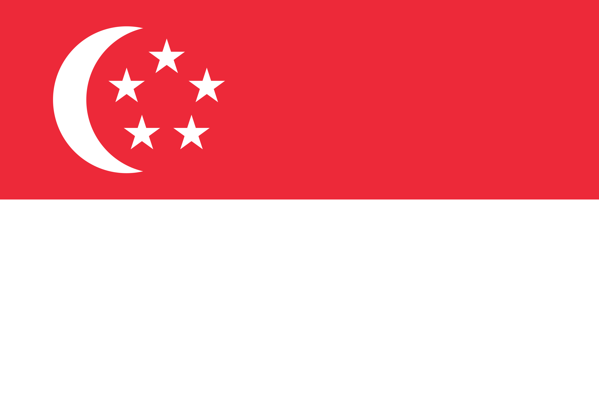

Qu'est ce que le Grand Beatbox Battle ?
Le Grand Beatbox Battle (GBB) est une compétition internationale et annuelle de beatbox organisée par Swissbeatbox.
Il est considéré comme l'événement majeur du beatbox, à l'image de la Ligue des Champions pour le football, générant un engouement supérieur à celui des championnats du monde.
Lors de la compétition, on retrouve différentes catégories de battle, le plus célèbre étant le Solo et la Loopstation, mais d'autres moins connues comme le Tag Team (en duo), le Crew (groupe de 3 à 5), le Tag Team Loopstation, ou encore tout récemment le U18 et le Producer.
L'événement suit un format de tournoi traditionnel, où les compétiteurs se relaient sur une scène, et où un panel de juges vote pour le vainqueur. Pour se qualifier pour la partie tournoi, les beatboxers du monde entier doivent soumettre des "wildcards" en ligne pour une invitation, ainsi que passer un tour d'élimination.
Histoire
Le Grand Beatbox Battle a été organisé pour la première fois en Suisse en 2009 par Swissbeatbox, une organisation de beatbox dirigée par Andreas "Pepouni" Fraefel. En 2011, l'événement est devenu international.
L'événement a eu lieu tous les ans depuis sa création, à l'exception de 2020 suite à la pandémie de COVID-19, ainsi qu'en 2022 pour cause de "restructuration interne". Néanmoins, le GBB reprend dés cette année pour une 13ème édition au Japon en octobre.
Champions Solo
2009 - Marzel
2010 - Marzel
2011 - SkilleR
2012 - Ball-Zee 
2013 - Dharni 
2014 - Dharni
2015 - Gene Shinozaki
2016 - Keny Urban
2017 - NapoM
2018 - CodFish
2019 - D-Low
2021 - Colaps
Format
Wildcards & Eliminations :
Pour rejoindre le GBB en tant que compétiteurs, les beatboxers doivent poster une vidéo d'eux-mêmes réalisant une routine de beatbox non éditée et la soumettre à Swissbeatbox pour jugement. Tout le monde peut soumettre une wildcard, mais il n'y a que 25 places disponibles pour le deuxième round, puis 11 places qualificatives. Normalement, les 3 meilleurs beatboxers de la compétition de l'année précédente reçoivent automatiquement une invitation et n'ont pas besoin de soumettre une wildcard pour l'édition suivante.
Lors de la première phase de l'évènement, chaque beatboxer participe à une phase «Elimination», où il exécute une routine sans adversaire. Les juges décident ensuite du placement dans le top 16 sur 21 participants pour disputer le titre de champion.
Les juges des battles sont généralement d'anciens vainqueurs du GBB ou d'une autre compétition de beatbox, ou bien des personnes estimées au sein de la communauté du beatbox. Il y a généralement un nombre impair de juges pour minimiser les combats à égalité. Souvent, les juges effectueront des « showcases » (performances) pour divertir pendant l'événement et montrer leur capacité de beatboxing.